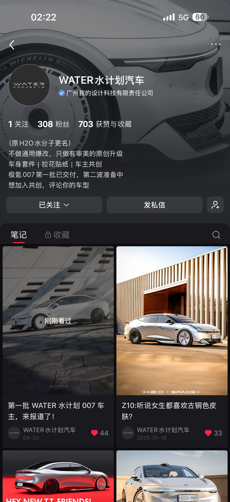
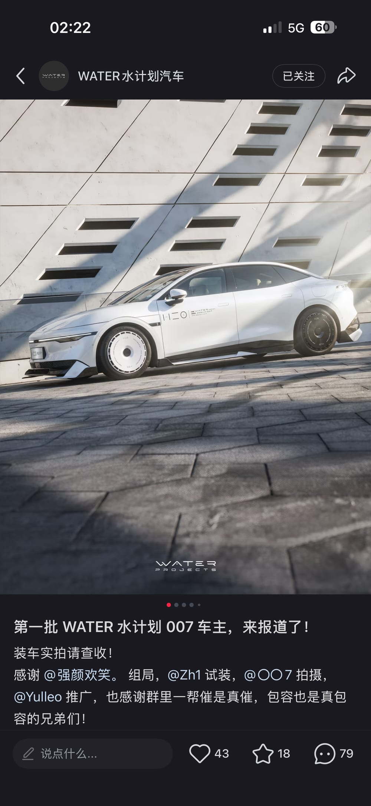
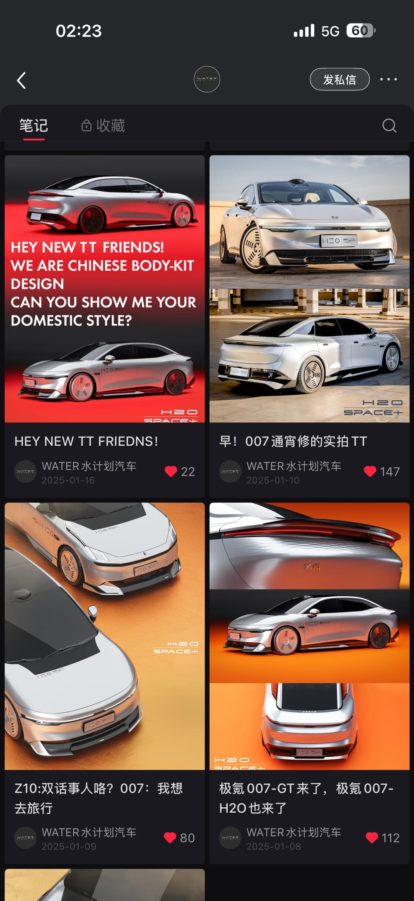

ZEEKR 007 × LYNK & CO Z10
双子星，
一套语言。
用两款车型建立可辨认的系列化设计。以低成本、高完成度的内容先打开传播，再把用户讨论推进到产品制作、交付与车主案例——这是 WATER PROJECT 从后装设计走向品牌的第一条路径。
- Design / 设计
- 007 × Z10同系列视觉语言，在两款车型上延展
- Content / 内容
- 渲染 → 社交传播以高质量内容快速建立品牌认知
- Product / 产品
- 用户共创 → 量产交付从 0–1 打通需求、生产、销售与安装
01 / ZEEKR 007先让设计，
先让设计，
成为话题。
007 的渲染图作为第一轮内容进入小红书，并通过茶话会收集用户反馈。内容推动讨论，讨论推动用户发起量产意向；随后进入收订、工厂沟通、客户群运营、交付与安装。
设计渲染
Render / 03 images从内容到量产的 0–1 链路
Concept → Delivery01制作渲染图
02发布小红书
03茶话会用户调研
04二次传播
05用户主动组织量产
06启动收订
07联系工厂
08建立客户群
09制定销售策略与售后
10交付及安装流程
11拍摄车主案例
量产装车实拍
Owner delivery / 08 images从数字效果回到真实车辆：车主装车照片验证了比例、细节与产品完成度。
下载 007–H2O 安装手册（2026）PDF↗
02 / LYNK & CO Z10再让同一语言，
再让同一语言，
长成系列。
Z10 从用户茶话会出发，延展 007 建立的 H2O / WATER 视觉线索；设计解读说明造型逻辑，CO 客大会与实拍图则呈现它进入真实交流与展示场景。
用户茶话会
User conversation / 07 imagesZ10 设计解读
Design language / 10 images从车身轮廓到套件细节，保留项目原始设计解读图的顺序，便于连贯阅读。
内容继续，
带动品牌。
007 的量产交付与 Z10 的共创声量相互支撑，让 WATER PROJECT 不只是单一改装件，而是持续被用户识别、讨论和传播的后装品牌。
小红书账号和内容截图作为传播触点示意，控制在小尺寸陈列，避免喧宾夺主。

品牌账号 / 01
内容展示 / 02
内容展示 / 03